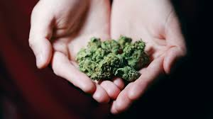
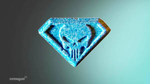
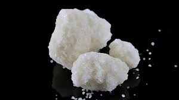

Káros szenvedélyek
dohányzás, alkohol, drogok stb.
Szenvedélybetegség
A szenvedélybetegség – más néven addikció – az agy jutalmazási rendszerének kóros megváltozását jelenti. Ilyenkor olyan tevékenységek végzése során kapcsol be a jutalmazás, amelyek nem az ember egészségét vagy túlélését szolgálják.
Dohányzás
Hatásai:
szív- és tüdőbetegségek
szívinfarktus
agyvérzés
rák
Alkohol
Hatásai:
bőr korai öregedése
csökkent immunvédekezés
májkárosodás
Drogok
Legnépszerűbbek:
Marihuána
szapora szívverés
szájszárazság
kivörösödött szemek
csökkent szemen belüli nyomás
hideg vagy melegség érzet a végtagokban
izomlazító hatás

Ecstasy
Jókedv
melegségérzet
megnöveli az érzékenységet
szédülést, hányingert (gyorsan elmúlnak)
partyzenék élvezhetőségének növelésére használják

Kokain
Szomjúság érzet
Fáradság érzet csökkenése
Testhőmérséklet emelkedés
Fájdalomküszöb emelkedés
Csökkenő étvágy, fogyás
Szaporább légzés, és szívverés
Szintetikus drogok
fokozott izzadás
étvágytalanság
magas láz
orrvérzés

Függőségeid:
NE CSINÁLD EZEKET